那須岳
| 日付 | 2007年6月16日（土） - 2007年6月17日（日） | ||||
|---|---|---|---|---|---|
| 山域 | 那須 | ||||
| メンバー | グループ（男6女5） | ||||
| 山行形態 | 1泊2日小屋泊 | ||||
| アクセス | 車 | ||||
| ルート (Map) |
|
【1日目】【2日目】
1泊2日で那須連山に行く。
様々な山容を見せる美しい山。
1日目
12:07 那須岳駐車場到着。標高1470m。
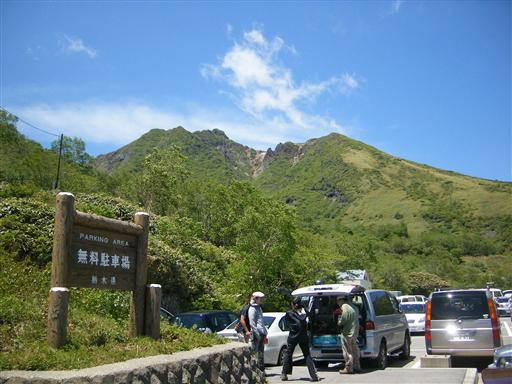
強風のためロープウェイは運休。
計画を変更して下から登ることに。
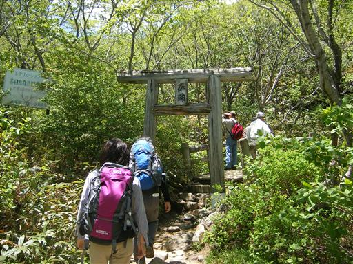
本日は快晴。朝日岳がきれいに見える。
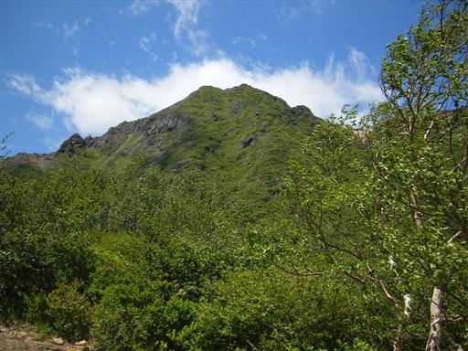
茶臼岳への斜面を登って行く。
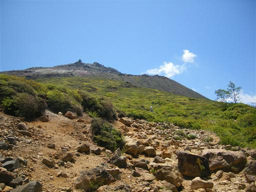
活火山なので植物はほとんど生えていない。
吹き飛ばされそうなほどの強風の中を登って行く。
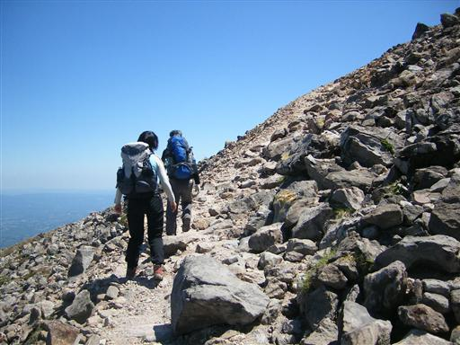
比較的小ぶりな茶臼岳の火口。
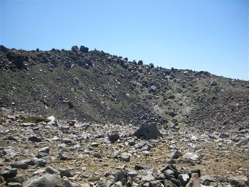
茶臼岳山頂到着。標高1915m。
風が強いため長居は無理。
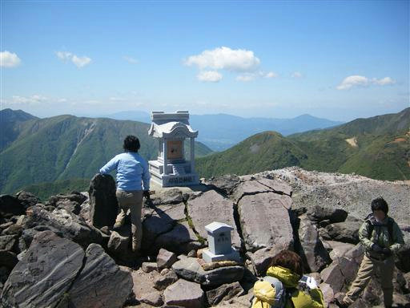
正面に見える朝日岳は一角が崩壊している。
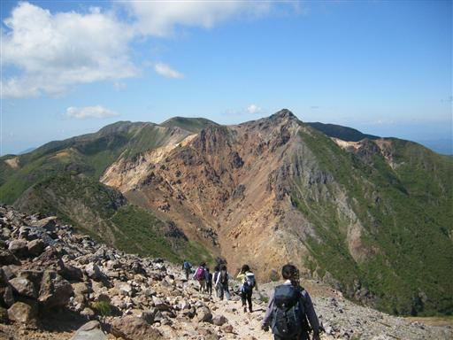
茶臼岳山腹では今でも噴煙を上げている。
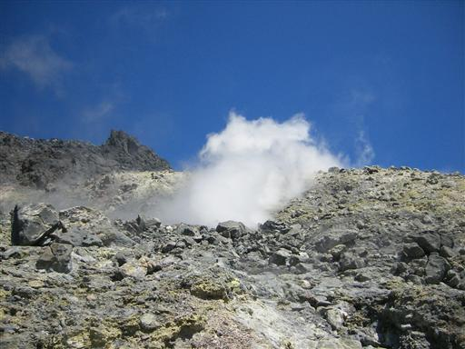
下のほうに降りてくると風景は一変する。
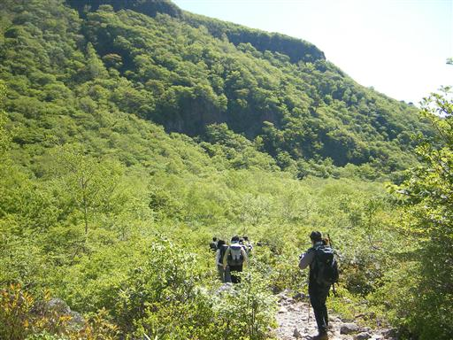
姥ヶ平から望む茶臼岳は美しい。

三斗小屋に到着。標高1500m。
山小屋と言うより古い旅館。
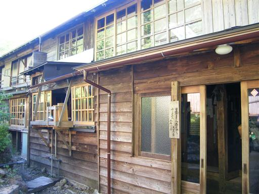
非常に趣のある建物。
食事は部屋まで運んでもらえる。
温泉もあり、至れり尽せり。
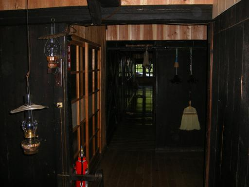